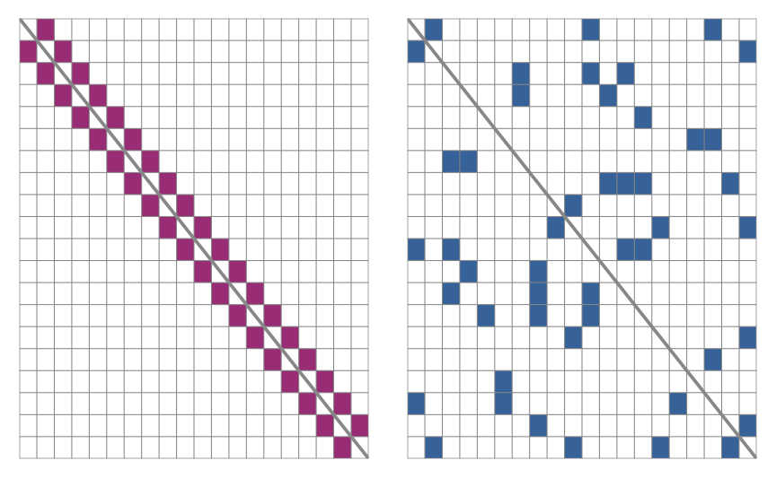
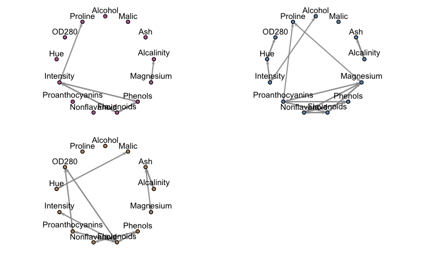
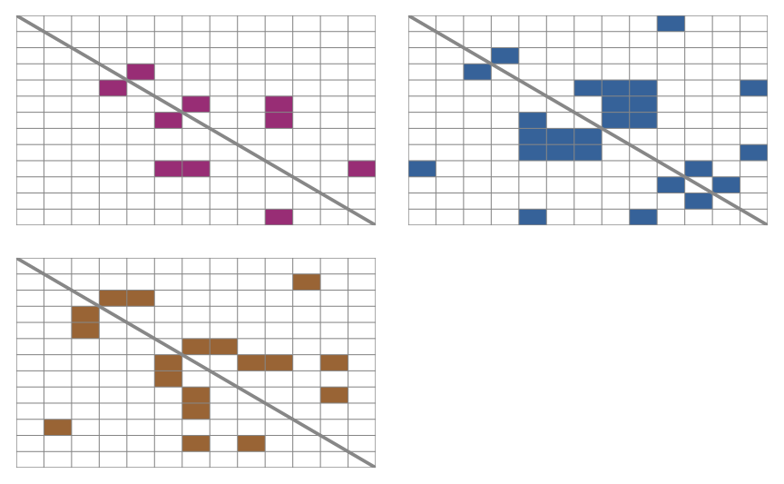
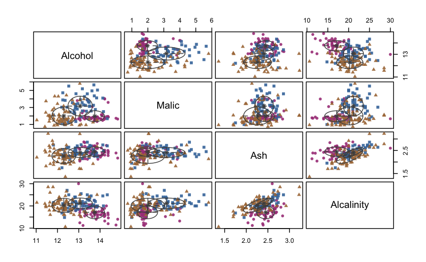
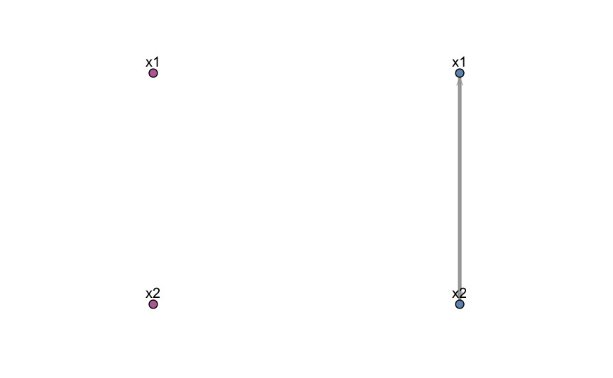
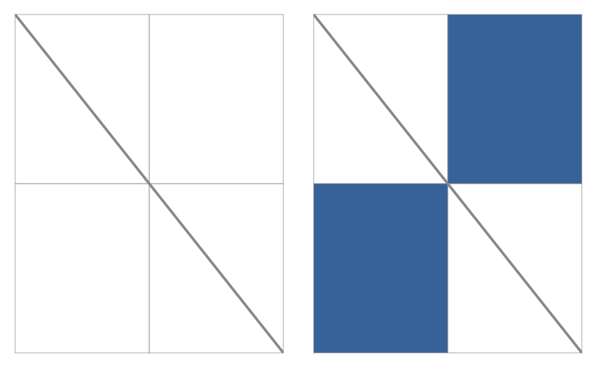
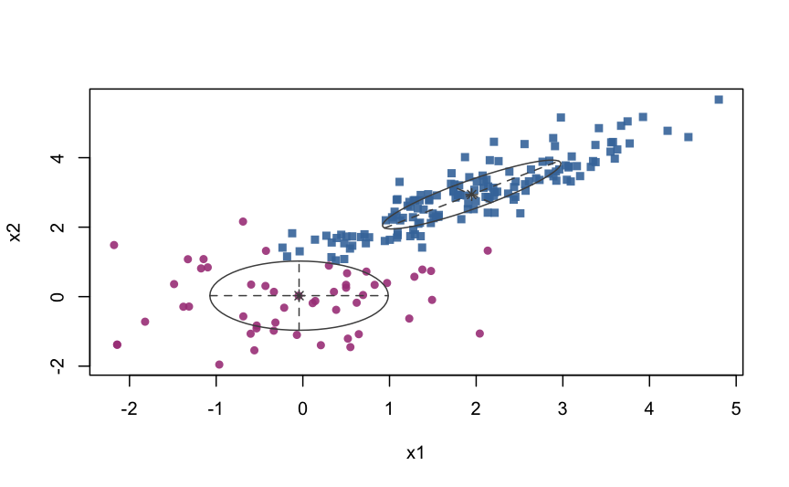

A quick tour of mixggm
Luca Scrucca, Michael Fop, T. Brendan Murphy
07 Jan 2019
Source:vignettes/mixgmm.Rmd
mixgmm.RmdIntroduction
The mixggm package implements mixtures of Gaussian graphical models for model-based clustering with sparse covariance and concentration matrices. Estimation of a mixture of Gaussian covariance or concentration graph models using structural-EM algorithm. The mixture model selected is the optimal model according to BIC.
This document gives a quick tour of mixgmm (version 1.0.1) functionalities. It was written in R Markdown, using the knitr package for production. See help(package="mixggm") for further details and references provided by citation("mixggm").
library(mixggm)
## _
## _ __ ___ (_)_ ____ _ __ _ _ __ ___
## | '_ ` _ \| \ \/ / _` |/ _` | '_ ` _ \ Mixtures of Gaussian
## | | | | | | |> < (_| | (_| | | | | | | Graphical Models
## |_| |_| |_|_/_/\_\__, |\__, |_| |_| |_|
## |___/ |___/ Version 1.0.1
## Type 'citation("mixggm")' for citing this R package in publications.Fit a mixture of concentration graph models


A complex simulated data example
N <- 500
V <- 20
tau <- c(0.3, 0.7)
Nk <- rowSums( rmultinom(N, 1, tau) )
class <- rep(1:2, Nk)
sigma1 <- rWishart(1, V+1, diag(V))[,,1]
mu1 <- rep(0, V)
mu2 <- rnorm(V, 0.5, 2)
x1 <- MASS::mvrnorm(Nk[1], mu1, sigma1)
x2 <- matrix(NA, Nk[2], V)
x2[,1] <- rnorm(Nk[2])
for(j in 2:V)
x2[,j] <- x2[,j-1] + rnorm(Nk[2], mu2[j], sd = 0.5)
x <- rbind(x1, x2)
colnames(x) <- paste0("x", 1:ncol(x))mod
##
## Mixture of Gaussian concentration graph models
## ===================================================
## K = 2
## N. dependence parameters: 43
## Log-likelihood: -13807.42
## Penalized log-likelihood: -14069.85
## Penalty: ebic
## Search: step-forw
plot(mod, what = "classification", dimens = c(1,5,10,15,20) )


Fit a mixture of covariance graph models
Wine data
mod
##
## Mixture of Gaussian covariance graph models
## ================================================
## K = 3
## N. dependence parameters: 27
## Log-likelihood: -3049.51
## Penalized log-likelihood: -3175.93
## Penalty: erdos
## Search: step-forw
mod$parameters$tau
## [1] 0.3263811 0.2977311 0.3758878
mod$parameters$mu
## 1 2 3
## Alcohol 13.7512717 13.0661222 12.2969456
## Malic 1.9708094 3.1600018 2.0013486
## Ash 2.4481584 2.4117496 2.2598003
## Alcalinity 17.1234261 21.1408788 20.2504153
## Magnesium 106.6677355 102.8722956 91.2478625
## Phenols 2.8548317 1.6892946 2.2889642
## Flavanoids 2.9916716 0.8476303 2.1295683
## Nonflavanoid 0.2852627 0.4303009 0.3741425
## Proanthocyanins 1.9039253 1.2626252 1.5791171
## Intensity 5.5414107 6.9708518 3.1233754
## Hue 1.0691692 0.7193769 1.0490749
## OD280 3.1652136 1.7528125 2.8113515
## Proline 1125.2248396 643.9657301 499.9164951
mod$parameters$sigma
## , , 1
##
## Alcohol Malic Ash Alcalinity Magnesium
## Alcohol 0.211164 0.0000000 0.0000000 0.00000 0.00000
## Malic 0.000000 0.4090926 0.0000000 0.00000 0.00000
## Ash 0.000000 0.0000000 0.0419702 0.00000 0.00000
## Alcalinity 0.000000 0.0000000 0.0000000 8.33384 11.38146
## Magnesium 0.000000 0.0000000 0.0000000 11.38146 123.25811
## Phenols 0.000000 0.0000000 0.0000000 0.00000 0.00000
## Flavanoids 0.000000 0.0000000 0.0000000 0.00000 0.00000
## Nonflavanoid 0.000000 0.0000000 0.0000000 0.00000 0.00000
## Proanthocyanins 0.000000 0.0000000 0.0000000 0.00000 0.00000
## Intensity 0.000000 0.0000000 0.0000000 0.00000 0.00000
## Hue 0.000000 0.0000000 0.0000000 0.00000 0.00000
## OD280 0.000000 0.0000000 0.0000000 0.00000 0.00000
## Proline 0.000000 0.0000000 0.0000000 0.00000 0.00000
## Phenols Flavanoids Nonflavanoid Proanthocyanins
## Alcohol 0.0000000 0.0000000 0.000000000 0.000000
## Malic 0.0000000 0.0000000 0.000000000 0.000000
## Ash 0.0000000 0.0000000 0.000000000 0.000000
## Alcalinity 0.0000000 0.0000000 0.000000000 0.000000
## Magnesium 0.0000000 0.0000000 0.000000000 0.000000
## Phenols 0.1155064 0.1036986 0.000000000 0.000000
## Flavanoids 0.1036986 0.1527821 0.000000000 0.000000
## Nonflavanoid 0.0000000 0.0000000 0.004450228 0.000000
## Proanthocyanins 0.0000000 0.0000000 0.000000000 0.168716
## Intensity 0.2034116 0.2870343 0.000000000 0.000000
## Hue 0.0000000 0.0000000 0.000000000 0.000000
## OD280 0.0000000 0.0000000 0.000000000 0.000000
## Proline 0.0000000 0.0000000 0.000000000 0.000000
## Intensity Hue OD280 Proline
## Alcohol 0.0000000 0.00000000 0.0000000 0.00000
## Malic 0.0000000 0.00000000 0.0000000 0.00000
## Ash 0.0000000 0.00000000 0.0000000 0.00000
## Alcalinity 0.0000000 0.00000000 0.0000000 0.00000
## Magnesium 0.0000000 0.00000000 0.0000000 0.00000
## Phenols 0.2034116 0.00000000 0.0000000 0.00000
## Flavanoids 0.2870343 0.00000000 0.0000000 0.00000
## Nonflavanoid 0.0000000 0.00000000 0.0000000 0.00000
## Proanthocyanins 0.0000000 0.00000000 0.0000000 0.00000
## Intensity 1.2939531 0.00000000 0.0000000 93.49499
## Hue 0.0000000 0.01354548 0.0000000 0.00000
## OD280 0.0000000 0.00000000 0.1288119 0.00000
## Proline 93.4949881 0.00000000 0.0000000 44789.01276
##
## , , 2
##
## Alcohol Malic Ash Alcalinity Magnesium
## Alcohol 0.3278668 0.000000 0.00000000 0.0000000 0.000000
## Malic 0.0000000 1.355003 0.00000000 0.0000000 0.000000
## Ash 0.0000000 0.000000 0.04675447 0.4101389 0.000000
## Alcalinity 0.0000000 0.000000 0.41013894 5.8083841 0.000000
## Magnesium 0.0000000 0.000000 0.00000000 0.0000000 239.982000
## Phenols 0.0000000 0.000000 0.00000000 0.0000000 0.000000
## Flavanoids 0.0000000 0.000000 0.00000000 0.0000000 3.821872
## Nonflavanoid 0.0000000 0.000000 0.00000000 0.0000000 -1.298627
## Proanthocyanins 0.0000000 0.000000 0.00000000 0.0000000 3.911920
## Intensity 0.4856788 0.000000 0.00000000 0.0000000 0.000000
## Hue 0.0000000 0.000000 0.00000000 0.0000000 0.000000
## OD280 0.0000000 0.000000 0.00000000 0.0000000 0.000000
## Proline 0.0000000 0.000000 0.00000000 0.0000000 625.497596
## Phenols Flavanoids Nonflavanoid Proanthocyanins
## Alcohol 0.00000000 0.00000000 0.00000000 0.00000000
## Malic 0.00000000 0.00000000 0.00000000 0.00000000
## Ash 0.00000000 0.00000000 0.00000000 0.00000000
## Alcalinity 0.00000000 0.00000000 0.00000000 0.00000000
## Magnesium 0.00000000 3.82187222 -1.29862713 3.91192024
## Phenols 0.14127096 0.00000000 0.02437099 0.09264343
## Flavanoids 0.00000000 0.12863721 -0.03318072 0.09237755
## Nonflavanoid 0.02437099 -0.03318072 0.02079345 0.00000000
## Proanthocyanins 0.09264343 0.09237755 0.00000000 0.24841656
## Intensity 0.00000000 0.00000000 0.00000000 0.00000000
## Hue 0.00000000 0.00000000 0.00000000 0.00000000
## OD280 0.00000000 0.00000000 0.00000000 0.00000000
## Proline 0.00000000 0.00000000 0.00000000 18.58798401
## Intensity Hue OD280 Proline
## Alcohol 0.4856788 0.00000000 0.00000000 0.00000
## Malic 0.0000000 0.00000000 0.00000000 0.00000
## Ash 0.0000000 0.00000000 0.00000000 0.00000
## Alcalinity 0.0000000 0.00000000 0.00000000 0.00000
## Magnesium 0.0000000 0.00000000 0.00000000 625.49760
## Phenols 0.0000000 0.00000000 0.00000000 0.00000
## Flavanoids 0.0000000 0.00000000 0.00000000 0.00000
## Nonflavanoid 0.0000000 0.00000000 0.00000000 0.00000
## Proanthocyanins 0.0000000 0.00000000 0.00000000 18.58798
## Intensity 5.7257199 -0.17031626 0.00000000 0.00000
## Hue -0.1703163 0.02177062 0.02992826 0.00000
## OD280 0.0000000 0.02992826 0.12806020 0.00000
## Proline 0.0000000 0.00000000 0.00000000 14830.34064
##
## , , 3
##
## Alcohol Malic Ash Alcalinity Magnesium
## Alcohol 0.3126302 0.00000000 0.0000000 0.0000000 0.000000
## Malic 0.0000000 1.10745929 0.0000000 0.0000000 0.000000
## Ash 0.0000000 0.00000000 0.1034785 0.6954257 1.152389
## Alcalinity 0.0000000 0.00000000 0.6954257 10.0667553 0.000000
## Magnesium 0.0000000 0.00000000 1.1523887 0.0000000 101.113171
## Phenols 0.0000000 0.00000000 0.0000000 0.0000000 0.000000
## Flavanoids 0.0000000 0.00000000 0.0000000 0.0000000 0.000000
## Nonflavanoid 0.0000000 0.00000000 0.0000000 0.0000000 0.000000
## Proanthocyanins 0.0000000 0.00000000 0.0000000 0.0000000 0.000000
## Intensity 0.0000000 0.00000000 0.0000000 0.0000000 0.000000
## Hue 0.0000000 -0.09027294 0.0000000 0.0000000 0.000000
## OD280 0.0000000 0.00000000 0.0000000 0.0000000 0.000000
## Proline 0.0000000 0.00000000 0.0000000 0.0000000 0.000000
## Phenols Flavanoids Nonflavanoid Proanthocyanins
## Alcohol 0.00000000 0.0000000 0.00000000 0.0000000
## Malic 0.00000000 0.0000000 0.00000000 0.0000000
## Ash 0.00000000 0.0000000 0.00000000 0.0000000
## Alcalinity 0.00000000 0.0000000 0.00000000 0.0000000
## Magnesium 0.00000000 0.0000000 0.00000000 0.0000000
## Phenols 0.24894491 0.1303079 -0.02662422 0.0000000
## Flavanoids 0.13030790 0.3770239 0.00000000 0.1736665
## Nonflavanoid -0.02662422 0.0000000 0.01424986 0.0000000
## Proanthocyanins 0.00000000 0.1736665 0.00000000 0.3037352
## Intensity 0.00000000 0.2389960 0.00000000 0.0000000
## Hue 0.00000000 0.0000000 0.00000000 0.0000000
## OD280 0.00000000 0.1614800 0.00000000 0.1247431
## Proline 0.00000000 0.0000000 0.00000000 0.0000000
## Intensity Hue OD280 Proline
## Alcohol 0.000000 0.00000000 0.0000000 0.00
## Malic 0.000000 -0.09027294 0.0000000 0.00
## Ash 0.000000 0.00000000 0.0000000 0.00
## Alcalinity 0.000000 0.00000000 0.0000000 0.00
## Magnesium 0.000000 0.00000000 0.0000000 0.00
## Phenols 0.000000 0.00000000 0.0000000 0.00
## Flavanoids 0.238996 0.00000000 0.1614800 0.00
## Nonflavanoid 0.000000 0.00000000 0.0000000 0.00
## Proanthocyanins 0.000000 0.00000000 0.1247431 0.00
## Intensity 0.908628 0.00000000 0.0000000 0.00
## Hue 0.000000 0.04149332 0.0000000 0.00
## OD280 0.000000 0.00000000 0.2293676 0.00
## Proline 0.000000 0.00000000 0.0000000 18022.49


A simple simulated data example
N <- 200
tau <- c(0.3, 0.7)
Nk <- rowSums( rmultinom(N, 1, tau) )
class <- rep(1:2, Nk)
sigma1 <- diag(2) # independent variables
sigma2 <- matrix( c(1,0.9,0.9,1), 2,2 ) # correlated variables
mu1 <- c(0, 0)
mu2 <- c(2, 3)
x <- rbind(MASS::mvrnorm(Nk[1], mu1, sigma1),
MASS::mvrnorm(Nk[2], mu2, sigma2))
colnames(x) <- paste0("x", 1:ncol(x))
mod <- mixGGM(x, model = "covariance")
mod
##
## Mixture of Gaussian covariance graph models
## ================================================
## K = 2
## N. dependence parameters: 1
## Log-likelihood: -549.78
## Penalized log-likelihood: -552.43
## Penalty: bic
## Search: step-forw


References
Fop, M., Murphy, T.B., and Scrucca, L. (2018) Model-based clustering with sparse covariance matrices. Statistics and Computing. URL: https://doi.org/10.1007/s11222-018-9838-y
devtools::session_info()
## ─ Session info ──────────────────────────────────────────────────────────
## setting value
## version R version 3.5.2 (2018-12-20)
## os macOS Sierra 10.12.5
## system x86_64, darwin15.6.0
## ui X11
## language (EN)
## collate en_US.UTF-8
## ctype en_US.UTF-8
## tz Europe/Rome
## date 2019-01-07
##
## ─ Packages ──────────────────────────────────────────────────────────────
## package * version date lib source
## assertthat 0.2.0 2017-04-11 [1] CRAN (R 3.5.0)
## backports 1.1.3 2018-12-14 [1] CRAN (R 3.5.0)
## callr 3.1.1 2018-12-21 [1] CRAN (R 3.5.0)
## cli 1.0.1.9000 2018-11-16 [1] Github (r-lib/cli@56538e3)
## codetools 0.2-16 2018-12-24 [1] CRAN (R 3.5.2)
## commonmark 1.7 2018-12-01 [1] CRAN (R 3.5.0)
## crayon 1.3.4 2017-09-16 [1] CRAN (R 3.5.0)
## desc 1.2.0 2018-11-16 [1] Github (r-lib/desc@7c12d36)
## devtools 2.0.1 2018-10-26 [1] CRAN (R 3.5.1)
## digest 0.6.18 2018-10-10 [1] CRAN (R 3.5.0)
## evaluate 0.12 2018-10-09 [1] CRAN (R 3.5.0)
## foreach 1.4.4 2017-12-12 [1] CRAN (R 3.5.0)
## fs 1.2.6 2018-08-23 [1] CRAN (R 3.5.0)
## glue 1.3.0 2018-07-17 [1] CRAN (R 3.5.0)
## htmltools 0.3.6 2017-04-28 [1] CRAN (R 3.5.0)
## iterators 1.0.10 2018-07-13 [1] CRAN (R 3.5.0)
## knitr * 1.21 2018-12-10 [1] CRAN (R 3.5.1)
## magrittr 1.5 2014-11-22 [1] CRAN (R 3.5.0)
## MASS 7.3-51.1 2018-11-01 [1] CRAN (R 3.5.2)
## mclust 5.4.2 2018-11-17 [1] CRAN (R 3.5.0)
## memoise 1.1.0 2017-04-21 [1] CRAN (R 3.5.0)
## mixggm * 1.0.1 2019-01-07 [1] CRAN (R 3.5.2)
## network 1.13.0.1 2018-04-02 [1] CRAN (R 3.5.0)
## pkgbuild 1.0.2 2018-10-16 [1] CRAN (R 3.5.0)
## pkgdown 1.3.0 2018-12-07 [1] CRAN (R 3.5.0)
## pkgload 1.0.2 2018-10-29 [1] CRAN (R 3.5.1)
## prettyunits 1.0.2 2015-07-13 [1] CRAN (R 3.5.0)
## processx 3.2.1 2018-12-05 [1] CRAN (R 3.5.0)
## ps 1.3.0 2018-12-21 [1] CRAN (R 3.5.0)
## R6 2.3.0 2018-10-04 [1] CRAN (R 3.5.0)
## Rcpp 1.0.0 2018-11-07 [1] CRAN (R 3.5.0)
## remotes 2.0.2.9000 2018-11-16 [1] Github (r-lib/remotes@bd970d7)
## rlang 0.3.0.1 2018-10-25 [1] CRAN (R 3.5.0)
## rmarkdown 1.11 2018-12-08 [1] CRAN (R 3.5.0)
## roxygen2 6.1.1 2018-11-07 [1] CRAN (R 3.5.0)
## rprojroot 1.3-2 2018-01-03 [1] CRAN (R 3.5.0)
## rstudioapi 0.8 2018-10-02 [1] CRAN (R 3.5.0)
## sessioninfo 1.1.1 2018-11-05 [1] CRAN (R 3.5.0)
## stringi 1.2.4 2018-07-20 [1] CRAN (R 3.5.0)
## stringr 1.3.1 2018-05-10 [1] CRAN (R 3.5.0)
## testthat 2.0.1 2018-10-13 [1] CRAN (R 3.5.0)
## usethis 1.4.0 2018-08-14 [1] CRAN (R 3.5.0)
## withr 2.1.2 2018-03-15 [1] CRAN (R 3.5.0)
## xfun 0.4 2018-10-23 [1] CRAN (R 3.5.0)
## xml2 1.2.0 2018-01-24 [1] CRAN (R 3.5.0)
## yaml 2.2.0 2018-07-25 [1] CRAN (R 3.5.0)
##
## [1] /Library/Frameworks/R.framework/Versions/3.5/Resources/library